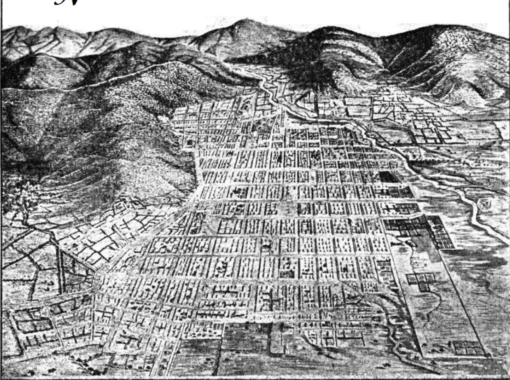

Conquista y Colonización
Después de asegurar victorias militares, Alvarado y los españoles se dispusieron a establecer su autoridad sobre los territorios conquistados. En sus cartas, Alvarado describe el proceso de someter a las poblaciones indígenas bajo el control español:
"Los recibí y los aseguré las vidas y les mandé que se viniesen á sus casas y poblasen la tierra como antes; los cuales lo han hecho así, y los tengo al presente en el estado que antes solían estar en servicio de su Magestad" (Alvarado, 1524/1913, p. 7).
Los españoles buscaron incorporar a las poblaciones nativas al sistema colonial, a menudo a través de la fuerza, la coerción y la imposición de nuevas leyes y regulaciones. Esto incluyó el establecimiento de pueblos al estilo español y la introducción de cultivos, ganado y prácticas agrícolas europeas.
Alvarado también fundó asentamientos coloniales, como Santiago de los Caballeros, para servir como centros de poder y control español:
"Hice y edifiqué en nombre de su Magestad una Ciudad de españoles, que se dice la Ciudad de Señor Santiago; porque desde aquí está en el riñon de toda la tierra" (Alvarado, 1524/1913, p. 20).
Estos asentamientos se convirtieron en los puntos focales de la administración española, el comercio y la actividad religiosa en la región. Sirvieron como base para la consolidación del dominio colonial y la expansión hacia nuevos territorios.
La conquista y colonización de Guatemala no solo implicó un cambio en las estructuras políticas y económicas, sino también una transformación profunda de la sociedad y la cultura indígena. Los españoles impusieron su idioma, religión y costumbres, buscando erradicar las prácticas tradicionales de los pueblos nativos.
A pesar de la resistencia y los desafíos que enfrentaron, los españoles lograron establecer un firme control sobre los territorios conquistados. La fundación de ciudades coloniales y la implementación de un sistema de gobierno y administración colonial sentaron las bases para la dominación española a largo plazo en la región.